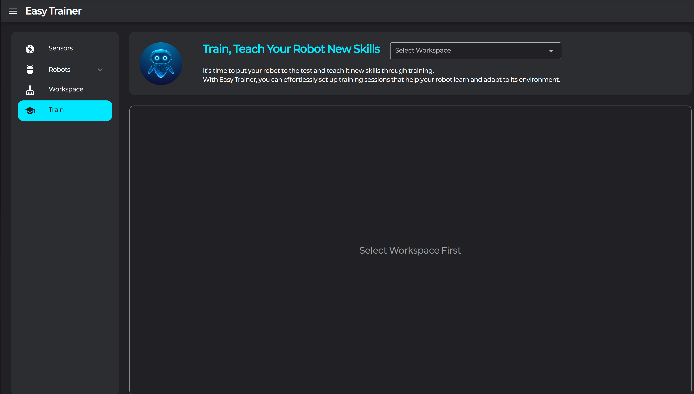
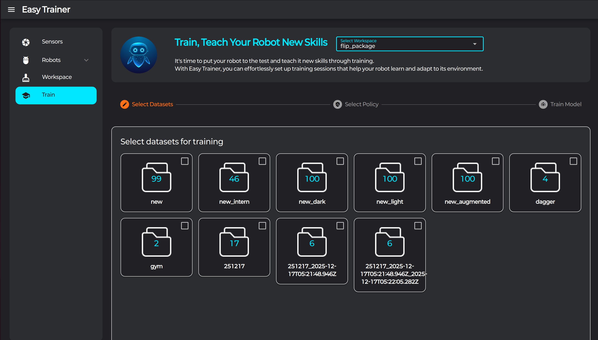
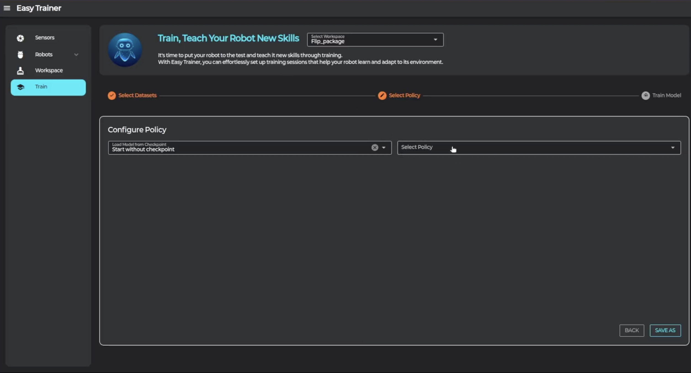
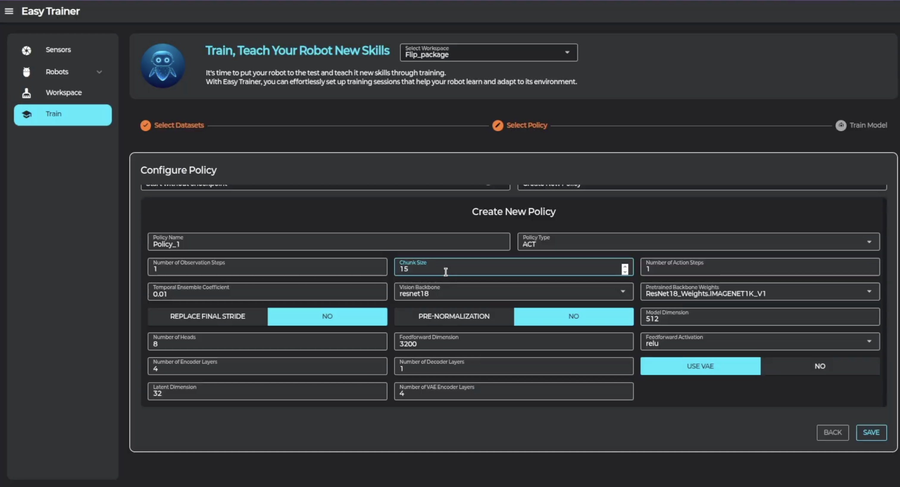
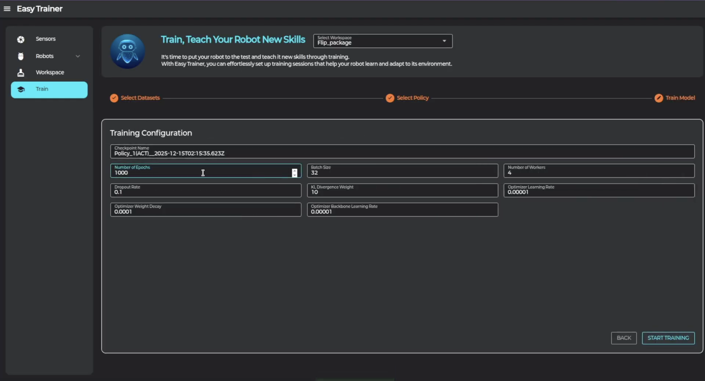
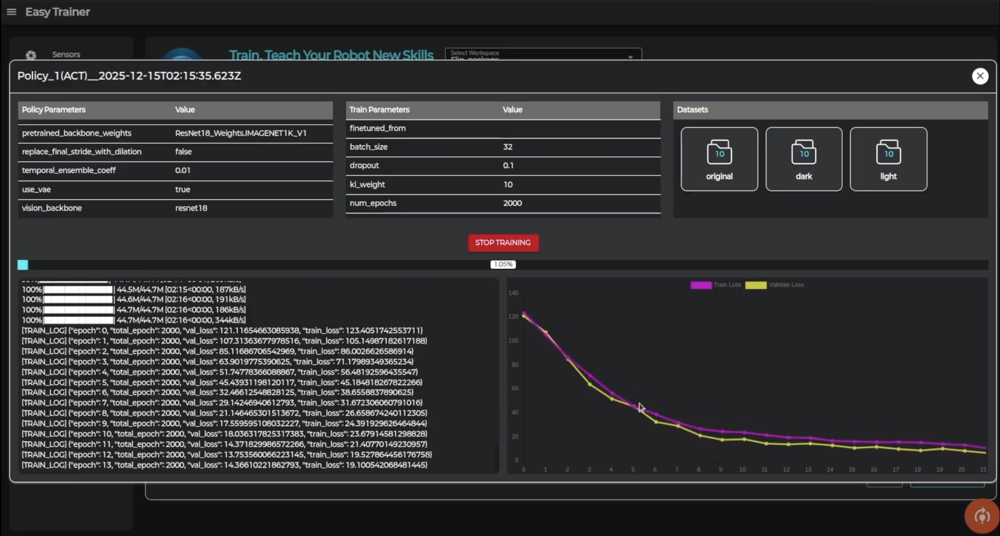

10 Training
수집된 데이터로 모델을 학습시키는 방법을 안내합니다.
🧠 모델 학습
데이터셋 선택
-
1. 워크스페이스 선택

Train 탭 → 상단 "Select Workspace"에서 워크스페이스를 선택합니다. -
2. 데이터셋 폴더 선택

학습 시 사용할 데이터셋 폴더를 선택합니다.
Policy 설정
-
3. Policy 선택

"Select Policy"에서 Policy를 선택하거나 새로운 Policy를 생성합니다. -
4. 모델 하이퍼파라미터 설정

모방학습 모델 및 모델 관련 하이퍼파라미터를 설정합니다. -
5. 학습 하이퍼파라미터 설정

학습 관련 하이퍼파라미터를 설정합니다. -
6. 학습 시작

학습을 시작하고 그래프를 통해 잘 학습되는지 확인합니다.
🔄 파인 튜닝
좌측 상단의 "Load Model from Checkpoint"에서 사전학습된 모델을 불러와서 추가 학습할 수 있습니다.
📋 학습 대기열
현재 프로그램이 학습 중인 상태에서 추가로 학습을 시키면 학습 대기열에 저장됩니다.
현재 진행 중인 학습이 끝나는 즉시 대기열에 있는 학습이 자동으로 진행됩니다.
학습 중에는 그래프를 주기적으로 확인하여 과적합(overfitting)이 발생하지 않는지 체크하세요.